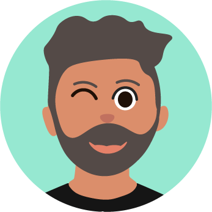

Dit keer spreek ik weer met Astrid Poot, want daar kan je niet vaak genoeg mee praten.

We vragen ons af of een supernet, professioneel ogend gebouw wel de juiste omgeving is voor een creatieve opleiding? En we hebben het natuurlijk over het boek dat Astrid heeft uitgegeven. En we hebben het over klooien met code. Onder veel en veel meer..
En dit keer beginnen we niet met de vraag: wanneer is iets goed?
Net zei je iets leuks, wat was het, over dat studenten misschien teveel verwend worden door deze super esthetische omgeving.
Ja... Ja, dat vraag ik me af. Weet je, dan kom ik hier binnen en dan is er.. is dat het Wibauthuis hiernaast?

Ja. Volgens mij, of Kohnstammhuis is dat.
Kohnstamm inderdaad. en daar is dan zo’n cafeetje met 100 soorten koek met maanzaad en havermout, en met zo’n ontzettend leuk meisje erachter die alles ook allemaal heel goed verkoopt in het Engels.

Dat is gewoon heel luxe catering op een school! En natuurlijk is dat Kohnstammhuis ook een soort ontvangstcentrum voor externe gasten..
Maar volgens mij heb je voor het bedenken van goede nieuwe ideeën een soort ruwheid om je heen nodig.

Daarom worden al die mooie ruw plaatsen buiten de stad door grote bedrijven gekocht om daar een soort ruwe spontane werkplek van te maken.